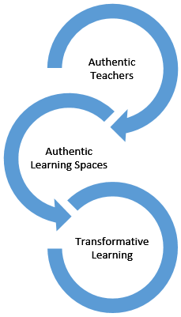

Unit 1 The Heart of a Teacher
Overview
As humans, we long for authenticity in our relationships. We want to feel “at home†in the organizations that are part of our lives – our families, schools, communities, places of worship. We seek connection. We search for a place where we are known.
This sense of being “at home†is essential to our experience as learners. Deep, authentic learning happens in spaces where we feel connected with others – places and spaces where we are known. Palmer (1998) refers to this as the “spiritual quest for connectedness†(p. 5).
In this course, we will explore together the theoretical foundations of learning communities, evaluating key elements essential to creating authentic learning communities, where learners are known and learning is authentic. In this unit, we will engage with the writings of Parker Palmer, a teacher and writer who has written several important works regarding the essential role of authenticity in teaching and learning.
In addition to reading, throughout this course, we will also listen to music and view several short films that will allow us to more deeply engage with the concepts of belonging and authenticity within the teaching/learning experience.
Unit 1 focuses on two guiding questions:
Guiding Questions
📖 Topics
Authenticity in Teaching and Learning
Identity and Integrity as a Coach/Facilitator
🯠Learning Outcomes
When you have completed this unit you should be able to:
Describe your own personal identity as a facilitator/teacher.
Identify your personal beliefs about your role as a facilitator/teacher.
Discuss key elements of an authentic learning community.
✔️ Activity Checklist
These learning activities will engage you in considering the guiding questions for this unit. As you plan your week, be sure to include time for these important learning activities. Note that not all activities are required. Your instructor will provide guidance on key activities to complete.
| Learning Activities | |
|---|---|
|
Activity: Read: Goode, Joanna: If you Build Teachers, will students come? |
|
|
Activity: Read: Palmer, P. (2017): Introduction, Chapter 1: The Heart of a Teacher: Identity and Integrity in Teaching; Chapter 3: The Hidden Wholeness: Paradox in Teaching and Learning. |
|
| Activity: Reflect on your values and respond in your Reflective Learning Journal. | |
| Activity: Rank the strategies listed to create an authentic learning space that is hospitable and open. Then, read:Â Herrington, J. & Oliver, R. (2000). An instructional design framework for authentic learning environments. Educational Technology Research and Development. 48(3), pp 23-48. | |
| Assessment: Unit 1 Discussion: Incorporating the readings in this unit, you will write a 150-250 word discussion post that addresses your values related to teaching and learning and the key elements of authentic learning spaces. See the Assessment sections for full details. |
1.1 Authenticity in Teaching and Learning
Teaching and learning are deeply personal experiences. Learning is, by definition, a transformative experience; we change as a result of learning. Teaching is also a transformative experience; we change as a result of teaching.

Figure 1.1: Authentic Learners and Authentic Teachers Model designed by Penfold Navarro, C. (2018)
In his book, The Courage to Teach: Exploring the Inner Landscape of a Teacher’s Life, Parker Palmer (2017) argues that the “inner landscape of teaching†is an essential foundation out of which authentic learning experiences emerge.
Teachers possess the power to create conditions that can help students learn a great deal – or keep them from learning much at all. Teaching is the intentional act of creating those conditions, and good teaching requires that we understand the inner sources of both the intent and the act. – Palmer (2017, p. 7)
📘 Activity: Reading
As we explore the importance of the “inner life of the teacher” as a foundation for authentic learning, read Chapter 1: The Heart of a Teacher: Identity and Integrity in Teaching in The Courage to Teach (Palmer, 2017).
For this course, you will keep a Reflective Learning Journal, which will provide the basis for many of your blog posts. Writing can be a powerful learning experience, as we engage in reflection and critical analysis of the new concepts we discover. Through regular writing, we are challenged to think critically, organize, and integrate these new concepts with our prior understanding, as you prepare for your future teaching/coaching.
💠Consider the following questions:
• In your Reflective Learning Journal, write a summary sentence for each major idea/concept that relates to your understanding of what it means to be a teacher/facilitator/coach.
• Choose the concept that most resonates with you and write a short paragraph summary of this concept, applied to your professional/personal context.
• Formulate one question that emerged from this reading that you will explore and consider in future course readings and discussions.
• As you prepare your discussions, refer to these notes.
1.2 Identity and Integrity as a Coach/Facilitator
Identity and integrity are foundational to good teaching. This means we must endeavour to know ourselves and to create learning spaces that foster integrity in our students, allowing them to authentically engage with each other, with us, and with the discipline we are studying.
In order to have integrity, we must know our own values and strengths, our own beliefs about teaching and learning, and our own perspective on the work we are doing.
If the work we do lacks integrity for us, then we, the work, and the people we do it with will suffer. – Palmer (2017, p. 16)
✏️ Activity: Reflect and Respond
As teachers, it’s important to identify and reflect on your own values.
💠Consider why you are taking this course. Why do you want to coach/facilitate learning? What are your beliefs about learning? What are your values about learning? What are your strengths? Where do you need help?
Take some time to answer the questions above in your Reflective Learning journal.
1.3 Creating Authentic Learning Spaces
For now we see in a mirror dimly, but then face to face; now I know in part, but then I will know fully just as I also have been fully known. – 1 Corinthians 13:12 (ESV)
As we begin thinking about creating authentic learning spaces, consider a time when you have felt “at home†within a learning community, whether in formal education, your faith community, or your employment. What elements made that learning space feel like “home?â€
In the song, *Home**, Phillip Phillips sings about the universal need we share as humans to “belong.†Take a moment now to listen to this song, considering what the lyrics say about what it means to belong.
Just know you’re not alone ’Cause I’m going to make this place your home. – Phillip Phillips,
In order for students to authentically learn, we must create learning spaces that are safe, where students know and feel that they belong. Palmer (1998) refers to this need for belonging as the “spiritual quest for connectedness†(p.5).
If a sense of belonging provides a foundation for learning, then in our role as teachers, facilitators, or coaches, we must endeavour to create spaces where students know and feel that they belong.
Good teachers possess a capacity for connectedness. They are able to eave a complex web of connections among themselves, their subjects, and their students so that students can learn to weave a world for themselves. – Palmer (2017, p. 11)
But how is this done?
In “To Know As We Are Known,†Palmer (1993) suggests that learning spaces must include openness, boundaries, and an air of hospitality. These learning spaces, according to Palmer (1993) can be spaces “both to be and to become†(p. 71).
✏️ Activity: Ranking
Rank the following strategies according to your comfort level. For each strategy, list one practical action you can take in an online learning environment (as facilitator or learner) to create an authentic learning space that is hospitable and open.*
“To study with a teacher who not only speaks but listens, who not only gives answers but asks questions and welcomes our insights, who provides information and theories that do not close doors but open new ones, who encourages students to help each other learn – to study with such a teacher is to know the power of a learning space†(Palmer, 1997, pp. 70-71)
-
Speaking
-
Listening
-
Giving answers
-
Asking questions
-
Providing information/theories that open doors
-
Encouraging students to help each other learn
Next, read the discussion of authentic learning environments in Herrington and Oliver (2000), consider how the elements they discuss align with or differ from Palmer’s (2017) description of learning communities.
📘 Herrington, J. and Oliver, R. (2000). An instructional design framework for authentic learning environments.
💠Questions to Consider
After completing the activities above, consider the following questions:
- What are the important values that will guide my teaching/facilitation?
- What elements matter most to me in a learning community?
- What can I do to create hospitable learning spaces?
Unit 1 Summary
In this first unit, you have had the opportunity to think and learn about your identify and beliefs about your role as a facilitator/teacher, and consider key elements of authentic learning communities. The hunger for authentic human relationships and authentic learning can and should compel us to consider our own identity and integrity, both as teachers and learners. In our next unit, we will explore ideas related to vulnerability in leadership, and learning to be “at home†with ourselves so we can, in turn, lead and teach others.
✏️ Assessment
Unit 1 Discussion
After completing this unit, including the learning activities, you are asked to write a discussion post on the following:
Part 1
Incorporating the readings in this unit, write a 150-250 word discussion post that addresses the following:
List and describe three values you hold related to teaching and learning. Write a personal statement about your identity as a coach/facilitator.
Part 2
For the second part of your discussion, write a 150-250 response to the following:
Consider the key elements of authentic learning spaces, outlined by Palmer (2017) in Chapter 3. Select two of these elements that you consider to be important. Introduce the element and discuss some practical steps you could take to create an authentic learning space. Respond to at least two other learners, providing additional suggestions regarding the elements they have chosen. Be sure to cite Palmer (2017) and other authors in both your initial posting and your responses to other learner to demonstrate ways in which your thinking aligns with, contrasts with, or builds on the writing of the authors.
Please submit your discussion posts and responses in the Unit 1 Discussion Forum in Moodle.
See the Assessment section for the Grading Criteria that explains how your discussion contributions will be evaluated.
🯠Checking your Learning
Use the learning outcomes for this unit as a checklist of understanding before you move to the next unit. Can you:
- describe your own personal identity as a facilitator/teacher?
- identify your personal beliefs about your role as a facilitator/teacher?
- discuss key elements of an authentic learning community?